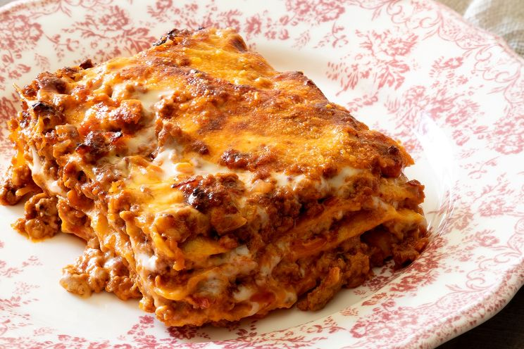

Lasagna

Description:
The Lasagna is one of the most famous italian pasta.
Usually in rectangular shapes, lasagna is made from a dough based on flour and eggs, with numerous local variants.
Ingredients:
- Meat: This super meaty lasagna has sweet italian sausage and lean ground beef.
- Onion and garlic: An onion and two cloves of garlic are cooked with the meat to add tons of flavor.
- Tomato products: You'll need a can of crushed tomatoes, two cans of tomato sauce, and two cans of tomato paste